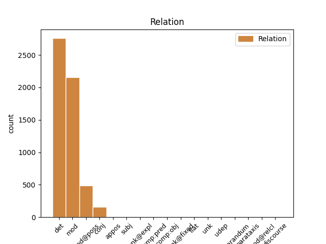
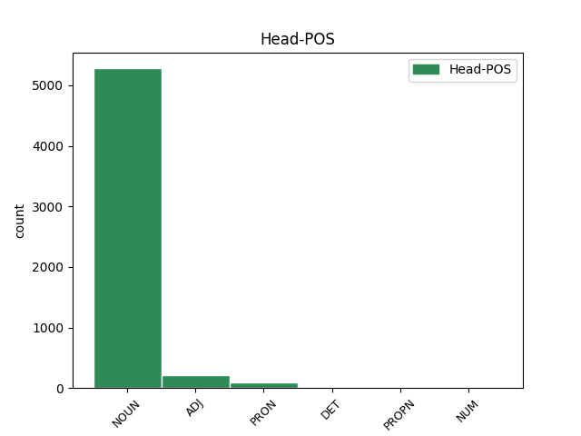
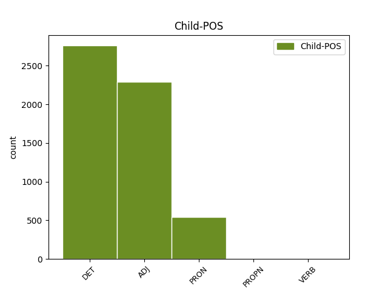

Distribution of features within this leaf



Agreement Rules sorted by frequency.
When the dependent token is None
1 Jag _ _ _ _ 0 _ _ _
2 rörde _ _ _ _ 0 _ _ _
3 mig _ _ _ _ 0 _ _ _
4 i _ _ _ _ 0 _ _ _
5 en en DET SG-IND Definite=Ind|Gender=Com|Number=Sing|PronType=Art 7 det _ _
6 svart _ _ _ _ 0 _ _ _
7 springares springare NOUN SG-IND-GEN Case=Gen|Definite=Ind|Gender=Com|Number=Sing 0 _ _ _
8 räta _ _ _ _ 0 _ _ _
9 vinklar _ _ _ _ 0 _ _ _
10 över _ _ _ _ 0 _ _ _
11 linjerna _ _ _ _ 0 _ _ _
12 , _ _ _ _ 0 _ _ _
13 men _ _ _ _ 0 _ _ _
14 utöver _ _ _ _ 0 _ _ _
15 några _ _ _ _ 0 _ _ _
16 uppskattande _ _ _ _ 0 _ _ _
17 affärsmän _ _ _ _ 0 _ _ _
18 fanns _ _ _ _ 0 _ _ _
19 det _ _ _ _ 0 _ _ _
20 ingen _ _ _ _ 0 _ _ _
21 där _ _ _ _ 0 _ _ _
22 som _ _ _ _ 0 _ _ _
23 verkade _ _ _ _ 0 _ _ _
24 intresserad _ _ _ _ 0 _ _ _
25 av _ _ _ _ 0 _ _ _
26 mig _ _ _ _ 0 _ _ _
27 . _ _ _ _ 0 _ _ _
When the dependent token is None
1 Han _ _ _ _ 0 _ _ _
2 tänkte _ _ _ _ 0 _ _ _
3 absolut _ _ _ _ 0 _ _ _
4 inte _ _ _ _ 0 _ _ _
5 bedriva _ _ _ _ 0 _ _ _
6 sodomi _ _ _ _ 0 _ _ _
7 med _ _ _ _ 0 _ _ _
8 sin _ _ _ _ 0 _ _ _
9 egen egen ADJ POS-SG-IND Case=Nom|Degree=Pos|Gender=Com|Number=Sing 10 mod _ _
10 hustru hustru NOUN SG-IND-NOM Case=Nom|Definite=Ind|Gender=Com|Number=Sing 0 _ _ _
11 . _ _ _ _ 0 _ _ _
When the dependent token is None
1 Allt _ _ _ _ 0 _ _ _
2 eftersom _ _ _ _ 0 _ _ _
3 hans _ _ _ _ 0 _ _ _
4 värld _ _ _ _ 0 _ _ _
5 mörknade _ _ _ _ 0 _ _ _
6 lade _ _ _ _ 0 _ _ _
7 sig _ _ _ _ 0 _ _ _
8 skuggorna _ _ _ _ 0 _ _ _
9 över _ _ _ _ 0 _ _ _
10 vårt vi PRON P1PL-GEN-SG Case=Gen|Definite=Def|Gender=Neut|Number=Sing|Poss=Yes|PronType=Prs 11 mod@poss _ _
11 hus hus NOUN IND-NOM Case=Nom|Definite=Ind|Gender=Neut|Number=Sing 0 _ _ _
12 . _ _ _ _ 0 _ _ _
When the dependent token is None
1 Tre _ _ _ _ 0 _ _ _
2 par _ _ _ _ 0 _ _ _
3 : _ _ _ _ 0 _ _ _
4 Jove _ _ _ _ 0 _ _ _
5 och _ _ _ _ 0 _ _ _
6 Stella _ _ _ _ 0 _ _ _
7 , _ _ _ _ 0 _ _ _
8 Jove _ _ _ _ 0 _ _ _
9 och _ _ _ _ 0 _ _ _
10 Alice _ _ _ _ 0 _ _ _
11 , _ _ _ _ 0 _ _ _
12 Alice Alice PROPN SG-NOM Case=Nom|Gender=Com|Number=Sing 0 _ _ _
13 och _ _ _ _ 0 _ _ _
14 Stella Stella PROPN SG-NOM Case=Nom|Gender=Com|Number=Sing 12 conj _ SpaceAfter=No
15 , _ _ _ _ 0 _ _ _
16 och _ _ _ _ 0 _ _ _
17 under _ _ _ _ 0 _ _ _
18 vars _ _ _ _ 0 _ _ _
19 och _ _ _ _ 0 _ _ _
20 ens _ _ _ _ 0 _ _ _
21 yta _ _ _ _ 0 _ _ _
22 finns _ _ _ _ 0 _ _ _
23 den _ _ _ _ 0 _ _ _
24 andres _ _ _ _ 0 _ _ _
25 ansikte _ _ _ _ 0 _ _ _
26 . _ _ _ _ 0 _ _ _
Disagree Examples:
1 ANSI-89 _ _ _ _ 0 _ _ _
2 ger _ _ _ _ 0 _ _ _
3 den _ _ _ _ 0 _ _ _
4 traditionella traditionell ADJ POS-DEF Case=Nom|Degree=Pos|Number=Plur 6 mod _ _
5 Jet _ _ _ _ 0 _ _ _
6 SQL-syntaxen SQLsyntax NOUN SG-DEF-NOM Case=Nom|Definite=Def|Gender=Com|Number=Sing 0 _ _ _
7 . _ _ _ _ 0 _ _ _
1 I _ _ _ _ 0 _ _ _
2 Microsoft _ _ _ _ 0 _ _ _
3 Access _ _ _ _ 0 _ _ _
4 kan _ _ _ _ 0 _ _ _
5 du _ _ _ _ 0 _ _ _
6 använda _ _ _ _ 0 _ _ _
7 en _ _ _ _ 0 _ _ _
8 anslutningsfil _ _ _ _ 0 _ _ _
9 för _ _ _ _ 0 _ _ _
10 att _ _ _ _ 0 _ _ _
11 knyta _ _ _ _ 0 _ _ _
12 en en DET SG-IND Definite=Ind|Gender=Com|Number=Sing|PronType=Art 15 det _ _
13 eller _ _ _ _ 0 _ _ _
14 flera _ _ _ _ 0 _ _ _
15 dataåtkomstsidor dataåtkomstsida NOUN PL-IND-NOM Case=Nom|Definite=Ind|Gender=Com|Number=Plur 0 _ _ _
16 till _ _ _ _ 0 _ _ _
17 en _ _ _ _ 0 _ _ _
18 datakälla _ _ _ _ 0 _ _ _
19 . _ _ _ _ 0 _ _ _
1 I _ _ _ _ 0 _ _ _
2 Microsoft _ _ _ _ 0 _ _ _
3 Access _ _ _ _ 0 _ _ _
4 kan _ _ _ _ 0 _ _ _
5 du _ _ _ _ 0 _ _ _
6 använda _ _ _ _ 0 _ _ _
7 en _ _ _ _ 0 _ _ _
8 anslutningsfil _ _ _ _ 0 _ _ _
9 för _ _ _ _ 0 _ _ _
10 att _ _ _ _ 0 _ _ _
11 knyta _ _ _ _ 0 _ _ _
12 en en DET SG-IND Definite=Ind|Gender=Com|Number=Sing|PronType=Art 0 _ _ _
13 eller _ _ _ _ 0 _ _ _
14 flera fler ADJ POS-PL-IND Case=Nom|Definite=Ind|Degree=Pos|Number=Plur 12 conj _ _
15 dataåtkomstsidor _ _ _ _ 0 _ _ _
16 till _ _ _ _ 0 _ _ _
17 en _ _ _ _ 0 _ _ _
18 datakälla _ _ _ _ 0 _ _ _
19 . _ _ _ _ 0 _ _ _
1 En _ _ _ _ 0 _ _ _
2 XML-schemafil _ _ _ _ 0 _ _ _
3 är _ _ _ _ 0 _ _ _
4 en _ _ _ _ 0 _ _ _
5 formell _ _ _ _ 0 _ _ _
6 specifikation _ _ _ _ 0 _ _ _
7 av _ _ _ _ 0 _ _ _
8 reglerna _ _ _ _ 0 _ _ _
9 för _ _ _ _ 0 _ _ _
10 ett _ _ _ _ 0 _ _ _
11 XML-dokument _ _ _ _ 0 _ _ _
12 , _ _ _ _ 0 _ _ _
13 som _ _ _ _ 0 _ _ _
14 innehåller _ _ _ _ 0 _ _ _
15 en en DET SG-IND Definite=Ind|Gender=Com|Number=Sing|PronType=Art 17 det _ _
16 rad _ _ _ _ 0 _ _ _
17 elementnamn elementnamn NOUN IND-NOM Case=Nom|Definite=Ind|Gender=Neut|Number=Plur 0 _ _ _
18 samt _ _ _ _ 0 _ _ _
19 information _ _ _ _ 0 _ _ _
20 om _ _ _ _ 0 _ _ _
21 vilka _ _ _ _ 0 _ _ _
22 element _ _ _ _ 0 _ _ _
23 som _ _ _ _ 0 _ _ _
24 är _ _ _ _ 0 _ _ _
25 tillåtna _ _ _ _ 0 _ _ _
26 i _ _ _ _ 0 _ _ _
27 dokumentet _ _ _ _ 0 _ _ _
28 och _ _ _ _ 0 _ _ _
29 i _ _ _ _ 0 _ _ _
30 vilka _ _ _ _ 0 _ _ _
31 kombinationer _ _ _ _ 0 _ _ _
32 . _ _ _ _ 0 _ _ _
1 När _ _ _ _ 0 _ _ _
2 du _ _ _ _ 0 _ _ _
3 filtrerar _ _ _ _ 0 _ _ _
4 ett _ _ _ _ 0 _ _ _
5 fält _ _ _ _ 0 _ _ _
6 markerar _ _ _ _ 0 _ _ _
7 du _ _ _ _ 0 _ _ _
8 ett en DET SG-IND Definite=Ind|Gender=Neut|Number=Sing|PronType=Art 0 _ _ _
9 eller _ _ _ _ 0 _ _ _
10 flera fler ADJ POS-PL-IND Case=Nom|Definite=Ind|Degree=Pos|Number=Plur 8 conj _ _
11 dataelement _ _ _ _ 0 _ _ _
12 i _ _ _ _ 0 _ _ _
13 fältet _ _ _ _ 0 _ _ _
14 som _ _ _ _ 0 _ _ _
15 du _ _ _ _ 0 _ _ _
16 vill _ _ _ _ 0 _ _ _
17 granska _ _ _ _ 0 _ _ _
18 , _ _ _ _ 0 _ _ _
19 och _ _ _ _ 0 _ _ _
20 döljer _ _ _ _ 0 _ _ _
21 alla _ _ _ _ 0 _ _ _
22 andra _ _ _ _ 0 _ _ _
23 element _ _ _ _ 0 _ _ _
24 . _ _ _ _ 0 _ _ _